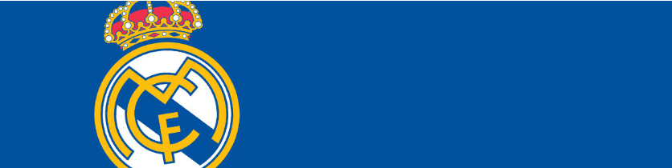

Su historia resumida

El Real Madrid Club de Fútbol es un club polideportivo de la ciudad de Madrid, España. Fundado el 6 de marzo de 1902 como Sociedad Madrid Foot-Ball Club, en su rama futbolística, que juega en la Primera División de España. Fue denominado por la FIFA el Mejor Club del Siglo XX. Es uno de los clubes de fútbol con más seguidores del planeta, además de tener más de 85.000 socios, y uno de los más laureados, entre sus palmareses tiene a nivel doméstico treinta y un campeonatos de liga, diecisiete copas del Rey y ocho supercopas - haciéndolo el conjunto más ganador de su país, y a nivel internacional catorce UEFA Champions League, dos copas de la UEFA, una supercopa europea y tres copas Intercontinentales. Siendo creado como club de fútbol en 1897 con el nombre de "Madrid Foot-Ball Club", por impulso de Julián Palacios, fue fundado oficialmente el 6 de marzo de 1902, por los hermanos Juan Padrós y Carlos Padrós. En su primera junta general extraordinaria, se eligió a Juan Padrós como primer presidente oficial y disputó su primer partido oficial tres días después, el 9 de marzo. No será hasta el 29 de junio de 1920, con la concesión del título de "Real", cuando obtiene el nombre con el que se le conoce desde entonces, Real Madrid Club de Fútbol.